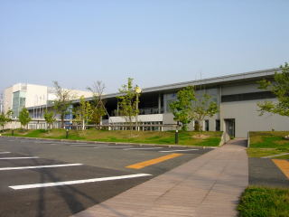
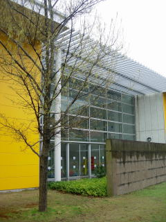
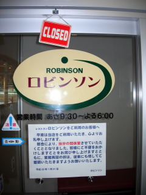

GWですが案外科学館は空いてました。
2010/05/04
明日は子供の日なので混むかもしれないですけど、今日は空いてました。天気が良かったので屋外に出かけて人が多かったかもしれないですね。

めざせ！弥生の森の出雲王～「出雲弥生の森博物館」と「出雲科学館」の合同イベントってのがやっていました。
島根県出雲市今市町1900番地2
2010/05/04
明日は子供の日なので混むかもしれないですけど、今日は空いてました。天気が良かったので屋外に出かけて人が多かったかもしれないですね。

めざせ！弥生の森の出雲王～「出雲弥生の森博物館」と「出雲科学館」の合同イベントってのがやっていました。
2010/04/11
科学館の2Fにレストラン ロビンソンがあったんですが、お休みにまっていました。

私はここで食事をした事はなかったんですが、色んな種類のソフトクリームを販売していたのでたまに食べに来ていました。

閉店ではなく、休業だそうです。 暖かくなって、ソフトクリームが食べたくなる頃に復活しているとうれしいです。